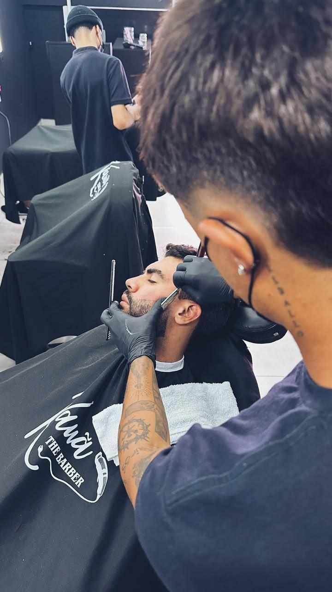
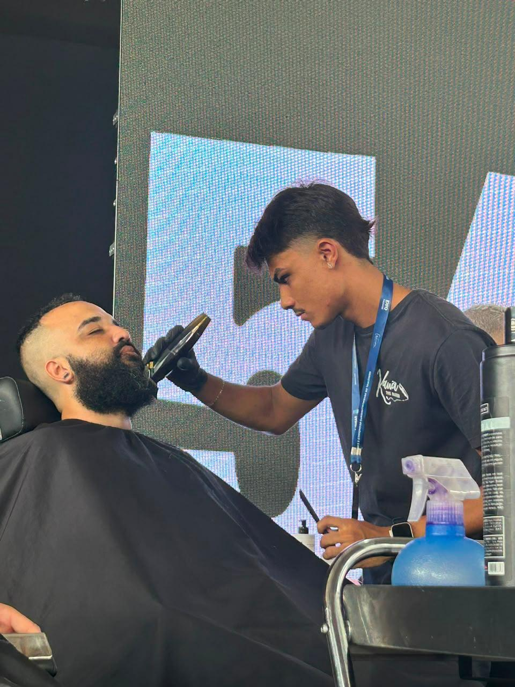
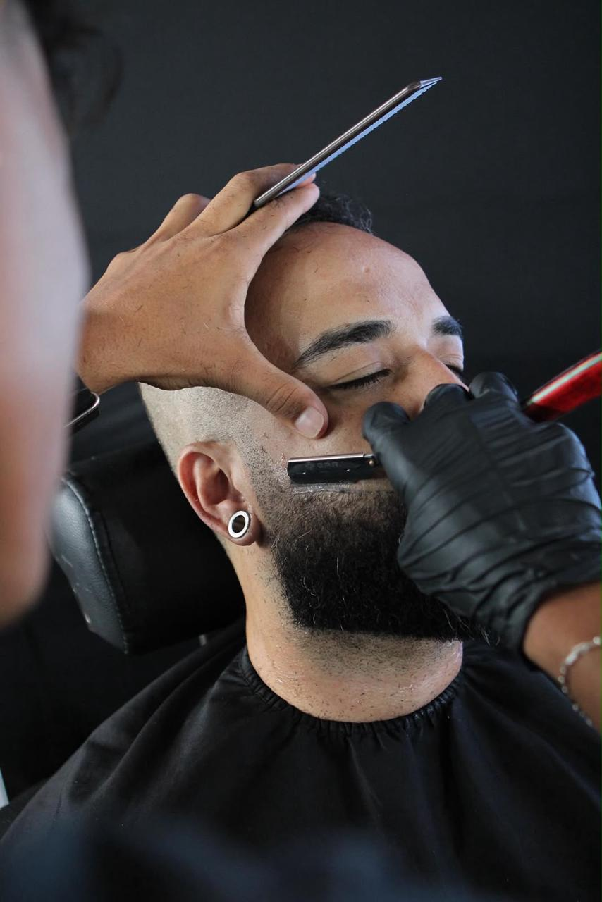

Conheça mais sobre a trajetória, especialidades e trabalhos de Kauã Valério.
Aqui vamos contar a trajetória profissional de Kauã Valério, como começou na barbearia, os desafios que enfrentou, sua evolução profissional e os momentos que fizeram parte da construção da Kauã The Barber.
Biografia Kauã Valério:
Olá eu sou o Kauã Valério mais conhecido como Kauathebarber, tenho 22 anos e a 5 eu trabalho como barbeiro. Minha trajetória nesse ramo começou de uma forma muito peculiar aonde eu estava naquela fase em que o jovem não sabe qual será o seu futuro, então foi aí que eu conheci uma pessoa muito especial e que abriu as portas do mundo da barbearia. Ele me ensinou a profissão e desde então nunca mais larguei, buscando sempre inovar, conhecer novas tendências, aprimorar minhas técnicas e ajudar as pessoas como um dia eu fui ajudado. Jamais teria chegado aqui sem a ajuda dele, dos meus familiares, amigos, e principalmente de Deus, tenho uma gratidão eterna por todos. Já conquistei muito com a barbearia porém irei muito mais longe pois ISSO É SÓ O COMEÇO!
Cursos, especializações e experiências profissionais de Kauã Valério.
Feito em 2020
Feito em 2021
Feito em 2021
Feito em 2022
Feito em 2022
Feito em 2022
Feito em 2022
Feito em 2022
Feito em 2023
Feito em 2024
Feito em 2025
Feito em 2025
Uma seleção de cortes e trabalhos realizados pelo próprio Kauã.



Vídeos de procedimentos, cortes e trabalhos realizados por Kauã.
Conheça o Método K.T.B e desenvolva técnicas de corte, posicionamento, redes sociais, gestão e muito mais.
CONHECER O MÉTODO K.T.BEntre em contato ou agende seu horário na Kauã The Barber.